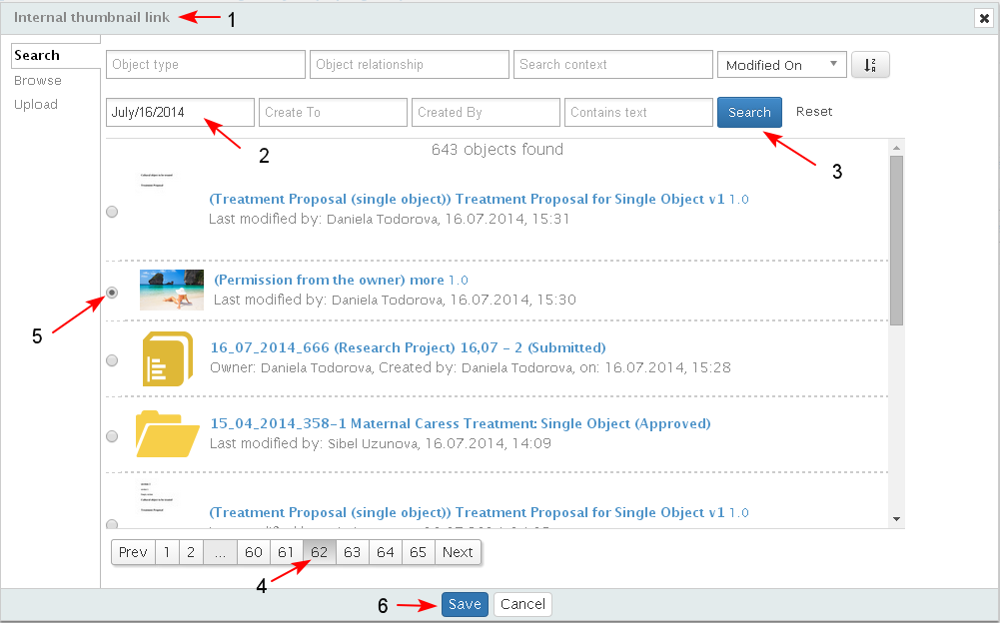
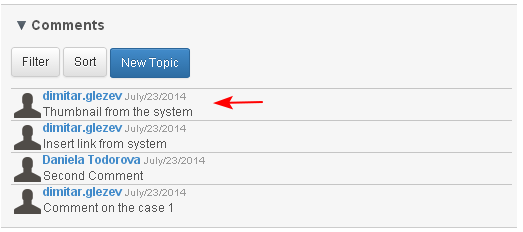

The action "Insert link" extends the action "Add new comment" and cannot be executed before the new comment is created.
While creating a new comment, in the Comment body, the user could insert a link to any primary system object, including a link to another comment and links to external web pages.
To insert a link to other object the user selects the type of link clicking the corresponding button from the text editor during the creation of a comment:
Web Link
The user enters title (1), selects the "Insert/edit link" button (2), enters the URL in the "Insert Link" pop-up (3-4-5) and posts the comment (6).

Image from Web
This option is active only for images, and the user could insert the whole image, not only link to it (1-2-3-4-5-6). (see also topic " Insert Image")

Insert Link from the system
- The user enters title and inserts a link in the content of the comment (1-2-3)

- A search screen opens, where the user searches for the object he/she would like to insert link to (1-2-3-4-5).

- After the object is selected the link to it is inserted in the place of the cursor in the text (1). The user completes entering data (2), selects the type of the comment (3) and clicks "Post"(3).

- When the comment is reviewed (1-2), the added link is active (3) and the user may open and review this content.

Thumbnail Link from the system
- The user enters title and text (1-2) and selects the "Insert thumbnail" button (3).

- The user searches and inserts object with a thumbnail from the system (1-2-3-4-5-6).

- The selected thumbnail is inserted in the text (1-2). The user clicks "Post" (3).

- The comments with the inserted thumbnail appears in the "Comments" section.

Comments visible in "Comments" dashlet
- All comments are visible in the "Comments" dashlet